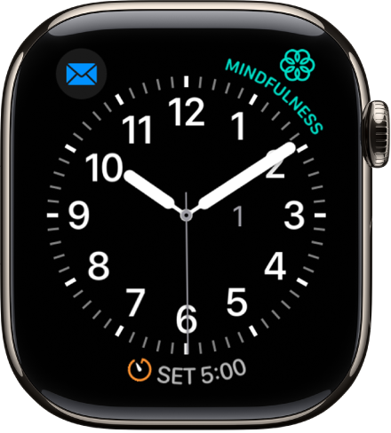

此表盘满足实际和功能需要；在速览中添加多达三项要在屏幕上查看的复杂功能。
下方的文件数包括本地化资源。固件名称键能确认包的归属；组件的圆屏点击边界、亮屏过渡与 AOD 对照均待设备验证。
NTKUtilityFaceBundle.bundleFACE_STYLE_UTILITY_DESCRIPTIONEDIT_OPTION_LABEL_UTILITY_TYPEFACE_EASTERN_ARABIC_COMPATIBILITYEDIT_OPTION_LABEL_UTILITY_TYPEFACE_MALAYALAMEDIT_OPTION_LABEL_UTILITY_TYPEFACE_DEVANAGARIEDIT_OPTION_LABEL_UTILITY_TYPEFACE_ODIAEDIT_OPTION_LABEL_UTILITY_TYPEFACE_TELUGUEDIT_OPTION_LABEL_UTILITY_TYPEFACE_OL_CHIKIEDIT_OPTION_LABEL_UTILITY_TYPEFACE_MEITEIEDIT_OPTION_LABEL_UTILITY_TYPEFACE_KHMEREDIT_OPTION_LABEL_UTILITY_TYPEFACE_EASTERN_ARABICEDIT_OPTION_LABEL_UTILITY_TYPEFACE_WESTERN_ARABIC_COMPATIBILITYEDIT_OPTION_LABEL_UTILITY_TYPEFACE_GURMUKHIEDIT_OPTION_LABEL_UTILITY_TYPEFACE_URDUEDIT_OPTION_LABEL_UTILITY_TYPEFACE_KANNADAEDIT_OPTION_LABEL_UTILITY_TYPEFACE_BENGALIEDIT_OPTION_LABEL_UTILITY_TYPEFACE_WESTERN_ARABICEDIT_OPTION_LABEL_UTILITY_TYPEFACE_GUJARATIEDIT_OPTION_LABEL_UTILITY_TYPEFACE_BURMESEEDIT_OPTION_LABEL_UTILITY_TYPEFACE_MEITEI_COMPANIONEDIT_OPTION_LABEL_UTILITY_TYPEFACE_BURMESE_COMPANIONEDIT_OPTION_LABEL_UTILITY_TYPEFACE_KHMER_COMPANIONEDIT_OPTION_LABEL_UTILITY_TYPEFACE_OL_CHIKI_COMPANIONEDIT_OPTION_LABEL_UTILITY_TYPEFACE_BENGALI_COMPANIONEDIT_OPTION_LABEL_UTILITY_TYPEFACE_ODIA_COMPANIONEDIT_OPTION_LABEL_UTILITY_TYPEFACE_TELUGU_COMPANIONEDIT_OPTION_LABEL_UTILITY_TYPEFACE_EASTERN_ARABIC_COMPATIBILITY_COMPANIONEDIT_OPTION_LABEL_UTILITY_TYPEFACE_KANNADA_COMPANIONEDIT_OPTION_LABEL_UTILITY_TYPEFACE_DEVANAGARI_COMPANIONEDIT_OPTION_LABEL_UTILITY_TYPEFACE_URDU_COMPANIONEDIT_OPTION_LABEL_UTILITY_TYPEFACE_WESTERN_ARABIC_COMPANIONEDIT_OPTION_LABEL_UTILITY_TYPEFACE_MALAYALAM_COMPANIONEDIT_OPTION_LABEL_UTILITY_TYPEFACE_WESTERN_ARABIC_COMPATIBILITY_COMPANIONEDIT_OPTION_LABEL_UTILITY_TYPEFACE_GURMUKHI_COMPANIONEDIT_OPTION_LABEL_UTILITY_TYPEFACE_GUJARATI_COMPANIONEDIT_OPTION_LABEL_UTILITY_TYPEFACE_EASTERN_ARABIC_COMPANION色组与设备条件 UtilityFace.color.plist 共享色组与默认值
-[NTKUtilityComplicationView setTritium_overridePlatterColor:];-[NTKUtilityComplicationView tritium_overridePlatterColor];-[NTKUtilityComplicationView tritium_overrideForegroundColor];-[NTKUtilityComplicationView setTritium_overrideForegroundColor:];-[NTKUtilityFaceView tritium_createFaceAnimator];-[NTKUtilityFaceView tritium_alwaysOnTimelines];-[NTKUtilityComplicationView applyTransitionFraction:fromFaceColorPalette:toFaceColorPalette:units:brightenedUnits:];-[NTKUtilityFaceDialView transitionFromTypeface:toTypeface:withFraction:];-[NTKUtilityFaceDialView transitionFromConfig:toConfig:withFraction:];-[NTKUtilityFaceDialView setTickColor:];-[NTKUtilityFaceDialView transitionFromStyle:toStyle:withFraction:];-[NTKUtilityFaceView _applyTransitionFraction:fromOption:toOption:forCustomEditMode:slot:];-[NTKUtilityFaceView tritium_createFaceAnimator];-[NTKUtilityFaceView tritium_alwaysOnTimelines];-[NTKUtilityFaceView _configureForTransitionFraction:fromEditMode:toEditMode:];-[NTKUtilityComplicationView setTritium_overridePlatterColor:];-[NTKUtilityComplicationView tritium_overridePlatterColor];-[NTKUtilityComplicationView setPlacement:];-[NTKUtilityComplicationView tritium_overrideForegroundColor];-[NTKUtilityComplicationView shouldUseBackgroundPlatter];-[NTKUtilityComplicationView setUseBlockyHighlightCorners:];-[NTKUtilityComplicationView setEditingRotationAngle:];-[NTKUtilityComplicationView setPlatterColor:];-[NTKUtilityComplicationView timeTravelDate];-[NTKUtilityComplicationView setFontWeight:];-[NTKUtilityComplicationView setShadowColor:];-[NTKUtilityComplicationView useAlternativePunctuation];-[NTKUtilityComplicationView setForegroundColor:];-[NTKUtilityComplicationView platterColor];-[NTKUtilityComplicationView accentColor];-[NTKUtilityComplicationView setUsesLegibility:];-[NTKUtilityComplicationView setFontSize:];-[NTKUtilityComplicationView placement];-[NTKUtilityComplicationView setUseAlternativePunctuation:];-[NTKUtilityComplicationView suppressesInternalColorOverrides];-[NTKUtilityComplicationView setShouldUseBackgroundPlatter:];-[NTKUtilityComplicationView editingRotationAngle];-[NTKUtilityComplicationView fontSize];-[NTKUtilityComplicationView fontWeight];-[NTKUtilityComplicationView useBlockyHighlightCorners];-[NTKUtilityComplicationView setAccentColor:];-[NTKUtilityComplicationView useRoundedFontDesign];-[NTKUtilityComplicationView device];-[NTKUtilityComplicationView setShouldScaleAndFadeWhenHighlighting:];-[NTKUtilityComplicationView applyFaceColorPalette:units:];-[NTKUtilityComplicationView shadowColor];-[NTKUtilityComplicationView setAlwaysEnforcePlatterInset:];-[NTKUtilityComplicationView setUseRoundedFontDesign:];-[NTKUtilityComplicationView foregroundImageAlpha];-[NTKUtilityComplicationView setForegroundAlpha:];-[NTKUtilityComplicationView usesLegibility];-[NTKUtilityComplicationView alwaysEnforcePlatterInset];-[NTKUtilityComplicationView applyTransitionFraction:fromFaceColorPalette:toFaceColorPalette:units:brightenedUnits:];-[NTKUtilityComplicationView shouldScaleAndFadeWhenHighlighting];-[NTKUtilityComplicationView setForegroundImageAlpha:];-[NTKUtilityComplicationView foregroundAlpha];-[NTKUtilityComplicationView setSuppressesInternalColorOverrides:];-[NTKUtilityComplicationView foregroundColor];-[NTKUtilityComplicationView setTritium_overrideForegroundColor:];-[NTKUtilityComplicationView setDevice:];+[NTKUtilityFace _dateComplicationSlotForDevice:];+[NTKUtilityFace _faceClassOfFaceWithRichComplicationSlotsForDevice:];+[NTKUtilityFace _complicationSlotDescriptors];+[NTKUtilityFace _dateComplicationSlotSupportedStylesForDevice:];+[NTKUtilityFace _orderedComplicationSlots];+[NTKUtilityFace _defaultSelectedComplicationSlotForDevice:];-[NTKUtilityFace complicationExistenceInvalidatesSnapshot];-[NTKUtilityFace applyPreviewConfigurationWithFamily:faceColor:];-[NTKUtilityFace _numberOfOptionsForCustomEditMode:slot:];-[NTKUtilityFace _defaultOptionForCustomEditMode:slot:];-[NTKUtilityFace _indexOfOption:forCustomEditMode:slot:];-[NTKUtilityFace _optionAtIndex:forCustomEditMode:slot:];-[NTKUtilityFaceDialView layoutSubviews];-[NTKUtilityFaceDialView setTickColor:];-[NTKUtilityFaceView _complicationAlphaForEditMode:];-[NTKUtilityFaceView _dateComplicationCenterOffsetForDensity:];-[NTKUtilityFaceView _updateDateComplicationPositionIfNecessary];-[NTKUtilityFaceView _dateComplicationAlphaForEditMode:];-[NTKUtilityFaceView _dateComplicationRightAlignmentForDensity:];-[NTKUtilityFaceView _applyTransitionFraction:fromOption:toOption:forCustomEditMode:slot:];-[NTKUtilityFaceView _slotForUtilitySlot:];-[NTKUtilityFaceView _layoutStyleForSlot:];-[NTKUtilityFaceView _applyOption:forCustomEditMode:slot:];-[NTKUtilityFaceView _updateDateComplicationPositionFromDensity:toDensity:fraction:];-[NTKUtilityFaceView _curvedComplicationCircleRadius:centerAngle:maxAngularWidth:circleCenter:interior:forSlot:];-[NTKUtilityFaceView utilityDateComplicationFontForDateStyle:];-[NTKUtilityFaceView _configureComplicationView:forSlot:];-[NTKUtilityFaceView _loadLayoutRules];-[NTKUtilityFaceView _utilityComplicationSlots];-[NTKUtilityFaceView _utilitySlotForSlot:];-[NTKUtilityFaceView _newLegacyViewForComplication:family:slot:];-[NTKUtilityFaceView textLayoutStyleForSlot:];+[NTKUtilityRichFace _complicationSlotDescriptors];+[NTKUtilityRichFace _richComplicationSlotsForDevice:];-[NTKUtilityRichFace complicationsColorRenderingUsage];-[NTKUtilityRichFaceView _configureComplicationView:forSlot:];